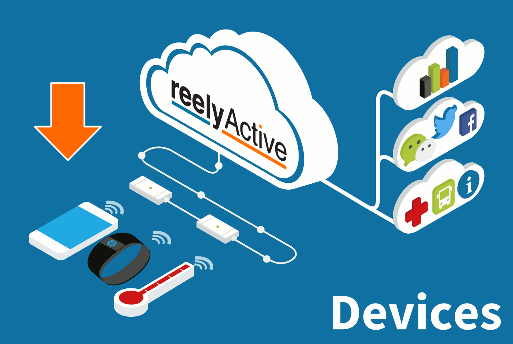
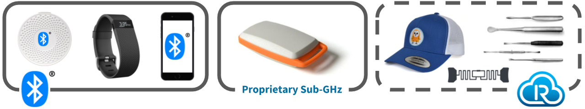
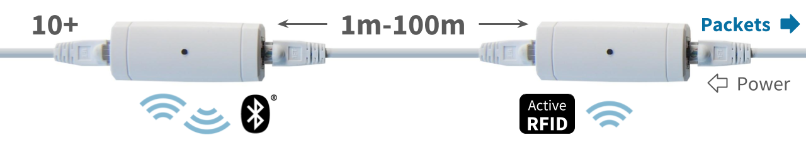
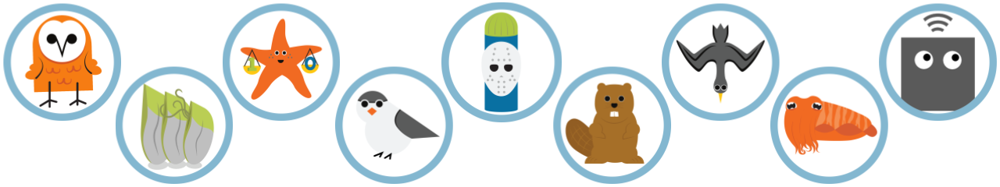

reelyActive Technology Platform Overview
An introduction and directory to all diyActive tutorials
The reelyActive technology platform allows computers to understand and measure the real world the same way they understand and measure the web. The low-power wireless devices people and products already carry (BYOD) are identified and located by infrastructure already deployed in physical spaces (BYOI). Our software translates this data stream into the language of the web so that existing web platforms may be extended to real world applications, in real-time.
Devices Reels Gateways Software Applications
Devices
Radio-identifiable "things" of the real world (BYOD)
 While there are tens of billions of connected devices, there are orders of magnitude more identifiable devices. Our platform supports BYOD (bring-your-own-device) for both, identifying and locating such devices in the real-world in real-time.
Towards collective hyperlocal contextual awareness
among heterogeneous RFID systems
Combining the strengths BLE and UHF passive RFID.
Bluetooth Low Energy (BLE)
The global standard for active RFID
Billions of Bluetooth devices are shipping annually and these include smartphones which can make people anonymously or uniquely identifiable, wearables, and beacons which may be affixed to objects or to physical places.
BLE Device Identifier Reference
How are BLE devices identified?
Integrate your Mobile Application
How to make your app visible to BLE infrastructure.
Integrate your Product
How to make your BLE device visible to infrastructure.
Sub-GHz Active RFID
reelyActive's proprietary system
Sub-GHz Active RFID is similar to BLE but operates at a lower radio frequency with better propagation characteristics and offers the benefit of security by obscurity. BLE being far more cost-effective, proprietary active RFID is typically employed only where these factors are critical.
| 915MHz Active RFID Tag (Americas) | View in online store |
| 868MHz Active RFID Tag (Europe) | Special order only |
RAIN RFID
The global standard for long-range passive RFID
RAIN RFID devices are shipping on at least an order of magnitude more than BLE, and are typically used for item-level tracking. We have demonstrated the compatibility of UHF passive RFID with our technology platform and are currently integrating the protocol into our software and libraries.
Reels
Our industrial-grade transceiver infrastructure
 At reelyActive, we developed the reel architecture to reliably and cost-effectively extend infrastructure coverage over wide areas. This plug-and-play daisy-chain configuration is as simple as it is versatile.
Reel Deployment
How do I deploy reels in my physical space?
Reel Overview
Understand and interface with our reel architecture.
Towards a Simple, Versatile, Distributed Low-Power Wireless M2M Infrastructure
The science behind the reel and low-power wireless infrastructure.
| Bluetooth Low Energy Reelceiver | View in online store |
| 915MHz Active RFID Reelceiver (Americas) | View in online store |
| 868MHz Active RFID Reelceiver (Europe) | Special order only |
Gateways and Infrastructure
Third-party receiver/transceiver infrastructure (BYOI)
Our platform is unique in supporting BYOI (bring-your-own-infrastructure). Third-party gateways and smart lighting infrastructure can interface with our software.
| Owl-in-One (BLE) | View in online store Configure |
Connectivity for Reels
Connect a reel to our software
Install a Starter Kit
How install any of reelyActive's starter kits.
Build your own Hub
How build your own USB or IP hub to connect our reels with our software.
Embedded Computers
Common embedded platforms can be configured as gateways
Make a Raspberry Pi Hub
How to configure the ubiquitous Raspberry Pi as a BLE scanner and gateway.
COTS Gateways
Commercial-off-the-shelf third-party gateways
Configure a BlueCats Edge Relay
How to configure the Edge Relay to stream data to a server running our software.
Software
Real-time translator of the real-world to the web
Pareto SaaS
The convenience of a hosted Software-as-a-Service

Our Pareto platform processes the data firehose from all deployments, and distributes the real-time contextual information as you define. Pareto lets you focus on solutions rather than software development.
Event Overview
Detailed explanation of the JSON data output from Pareto.
Connect a Websocket Client to Pareto
How to tap into the real-time data stream both server-side and client-side.
Open Source Software
The freedom to do-it-yourself and to contribute too
 We maintain open libraries for an open Internet of Things. And our open source software provides the foundation to develop for specific needs, especially in offline and small-scale applications.
Open Librairies
Sniffypedia
Associate identifiers with products and manufacturers.
Server-Side
Install an Offline Demo
Install our open source software suite on your local machine to demo even without Internet connectivity.
Barnowl Baby Steps
Use our lowest-level software for real-time applications.
Client-Side
Build Web Apps with beaver.js
How to build some pretty 'dam' useful web apps with beaver.js and a real-time 'stream' of data.
General
List of all reelyActive OSS
Exhaustive list of the open source software we and our partners have developed.
Mascot Stories
Our software packages have mascots. Those mascots have stories.
Platform Integrations and Applications
What to do with the real-time data stream
Having translated the real world into the language of the web, our technology platform enables you to extend the power of the web back to the real world in which we live, experience and interact.
Analytics Platforms
Collect and make sense of historical data
Forward Sensor Data to Initial State
How to forward sensor beacon data to Initial State for timeseries analysis.
Artistic and Creative
Generate audio-visual experiences from ambient packet traffic
Experience Generative Art
Use real-time wireless packet traffic to generate audio-visual art.
What's next?
Visit www.reelyactive.com for a non-technical overview, visit getpareto.com to start a trial of our SaaS, or return to the diyActive home page for technical tutorials.